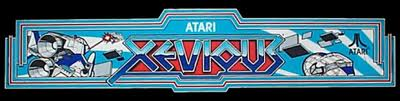
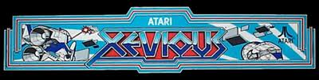

Parent Website
Tech
Technology Strengths/Weaknesses: I am fairly comfortable with using technology such as computers. I love to find out new things about computers that would help me out later on. I hope to learn even more about coding websites and video games. I have not yet learned how to make iPhone apps, but I am very curious to find out. I have not made any other websites, but I have used some website programs in the past. I do like to play video games in my free time either on the computer or Xbox. I sometimes like to play the older stand-up video games that were made in the 80’s.
 
